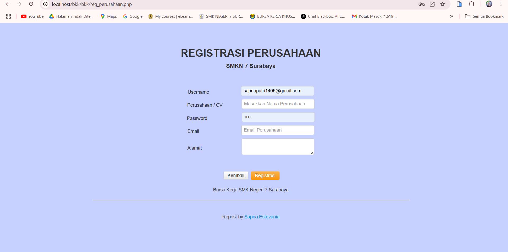

"This is the main page of the Special Job Exchange Portal (BKK) of SMK Negeri 7 Surabaya which presents information about BKK services and functions. BKK aims to bring together graduates with job seekers, as well as provide information about vacancies, distribution, and placement of workers."
"This view is the organizational structure of the Special Job Exchange (BKK) of SMK Negeri 7 Surabaya. The navigation menu at the top provides access to the main page, organizational structure, BKK profile, information, contacts, login, and list, making this view informative and easy to navigate for users."

"This page is a company registration form for the SMKN 7 Surabaya Job Fair. This display displays the fields for username, company name, password, email, and address. There are two buttons at the bottom, namely "Back" to return to the previous page and "Registration" to send registration data. This design is made simple to make it easier for companies to register and work with BKK SMKN 7 Surabaya."
"This view is the Participant Registration page on the BKK Portal of SMK Negeri 7 Surabaya. This form is designed to collect prospective participant data, which includes information such as NISN, Full Name, Gender, Place and Date of Birth, and Parents' Names. In addition, participants are also required to fill in their Address, Telephone Number, Major, School of Origin, and Year of Graduation. After filling in all the information, participants can click the Registration button to complete the registration process."
"This display is the login page for the Special Job Exchange (BKK) information system intended for alumni of SMK Negeri 7 Surabaya. Users are asked to enter a username and password to access the system. Below it, there is a "Remember Me" option to save login information. Two buttons are provided, namely the orange "Back" button to return to the previous page and the blue "Sign In" button to enter the system."
"This page is the admin login display for the BKK SMK Negeri 7 Surabaya Information System. With a simple and intuitive design, users can enter their username and password to access the system. There is a "Remember Me" option to facilitate repeated access and a "Back" button to return to the previous page, and "Sign In" to continue to the main dashboard."
"Tampilan ini adalah halaman login untuk perusahaan pada Sistem Informasi BKK SMK Negeri 7 Surabaya. Pengguna dapat masuk dengan memasukkan username dan password yang telah terdaftar. Fitur "Remember Me" membantu untuk memudahkan login di lain waktu, dengan pilihan "Kembali" untuk kembali ke halaman sebelumnya dan "Sign In" untuk melanjutkan ke sistem. Selain itu, terdapat tautan untuk registrasi akun baru bagi perusahaan atau CV yang ingin bergabung."
"The BKK Portal display of SMK Negeri 7 Surabaya displays key statistics, such as 12 New Vacancies, 9 Companies, 4 Registered Users, and 0 Entry Vacancies, with different colors for each category. On the left side, there is a navigation menu to manage school data, participants, vacancies, information, alumni tracking, users, and reports. At the bottom, there is the school logo and the name of this portal as a job information center for students and alumni."